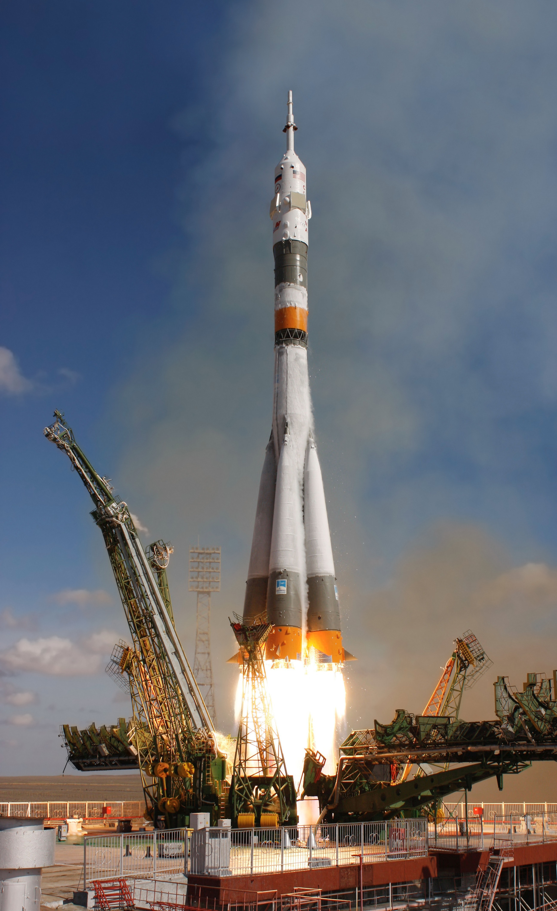

Space Exploration
Welcome to our Space Exploration Blog! In this virtual universe, we embark on an awe-inspiring journey into the depths of space, delving into the captivating realm of scientific exploration, technological advancements, and the limitless possibilities that lie beyond Earth's boundaries. Space exploration is a captivating field that holds tremendous potential for expanding our understanding of the universe, discovering new celestial bodies, and pushing the boundaries of human knowledge and ingenuity. Space exploration has always captivated the human imagination. From the first steps on the moon to the breathtaking images of distant galaxies captured by telescopes, each milestone in space exploration has opened up new frontiers of discovery. Our blog seeks to share the wonders of this remarkable field, inspire wonder and awe, and foster a sense of unity as we contemplate our place in the vast cosmic tapestry.

Space exploration is an interdisciplinary endeavor that transcends the boundaries of science, technology, engineering, and mathematics (STEM). Our blog will traverse various domains, including astronomy, astrophysics, planetary science, and aerospace engineering, to provide a comprehensive exploration of the cosmic frontier. We will examine the tools, instruments, and spacecraft that enable us to explore distant planets, study celestial phenomena, and unravel the mysteries of the universe.
Space exploration is a testament to human ingenuity and the pursuit of knowledge. It requires expertise from a multitude of disciplines, including physics, chemistry, biology, and computer science. Our blog will highlight the collaborative efforts of scientists, engineers, and researchers from around the world who work together to develop groundbreaking technologies and push the boundaries of what is possible. Through engaging discussions and in-depth analyses, we aim to showcase the intricate web of scientific advancements that make space exploration a reality.
The exploration of space is not only a scientific pursuit but also a testament to human ambition, perseverance, and collaborative efforts. Our blog will showcase international space missions, space agencies, and space collaborations that unite nations in the quest for knowledge beyond Earth. We will delve into the challenges faced by astronauts, engineers, and scientists during space missions and highlight the remarkable achievements that have been accomplished through international cooperation.
Space exploration represents the pinnacle of human achievement and serves as a symbol of what we can accomplish when we work together. It transcends national boundaries and reminds us of our shared humanity. Our blog will celebrate the achievements of space agencies such as NASA, ESA, Roscosmos, and others, and explore the collaborative projects like the International Space Station that have brought nations together for peaceful exploration of space. By highlighting these collective efforts, we hope to inspire unity, international cooperation, and the pursuit of common goals for the betterment of humanity.
Space exploration has profound implications for our understanding of Earth and our role within the universe. We will explore how space-based observations and research contribute to monitoring climate change, understanding natural disasters, and advancing sustainable development on our planet. By emphasizing the interconnectedness between space exploration and the well-being of Earth and its inhabitants, we aim to foster a sense of stewardship and responsibility towards our home planet. Space exploration provides us with a unique vantage point from which we can observe and study our own planet. Satellites and space-based instruments offer valuable data on Earth's climate, weather patterns, and environmental changes. Our blog will highlight the ways in which space technologies contribute to addressing global challenges, such as monitoring deforestation, predicting and mitigating natural disasters, and improving our understanding of climate systems. By showcasing these applications, we aim to underscore the importance of space exploration for the sustainability and resilience of our own planet.